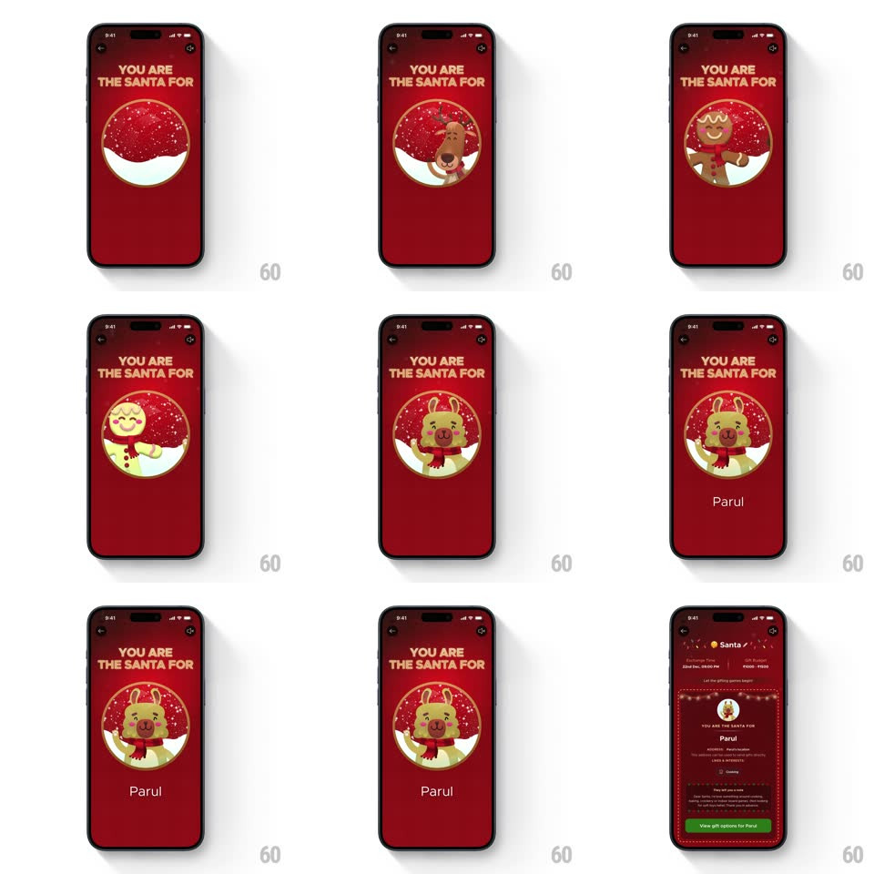

Media
Frame-by-frame

Rebuild this animation 1:1: Blinkit's Secret Santa match reveal - illustrated characters cycle inside a snow globe until it lands on your recipient, their name fades in, and the detailed recipient card slides up.

Rebuild this animation 1:1: Blinkit's Secret Santa match reveal - illustrated characters cycle inside a snow globe until it lands on your recipient, their name fades in, and the detailed recipient card slides up.
## Integration
Integration: stack-agnostic spec - springs given as stiffness/damping, timed motions as duration + curve; map every value to your framework and animation library of choice.
## Scene
Deep red festive screen with fairy lights strung across the top: "YOU ARE THE SANTA FOR" in cream caps, a large snow-globe circle (snowy base, falling snow inside) cycling illustrated characters, and the recipient's name ("Parul") below the globe. Final state: a detailed recipient card - Santa header, collection time, address, likes & interests rows, and a green "View gift options for Parul" button.
## Motion spec
Pattern: cycling character carousel inside a snow globe resolving to a recipient card.
- The headline fades in (300ms) as the globe scales up from 0.7 (spring ~350/14) with its snow already drifting.
- Characters cycle through the globe like a slot machine: each slides up through the circular mask (~350ms per face, ease-in-out), accelerating slightly then decelerating across ~6 faces.
- On the final face the globe pulses (scale 1 -> 1.05 -> 1, spring ~400/14), a sparkle ring flashes around its rim (300ms), and the snow burst quickens for a beat.
- The recipient's name fades in below the globe (opacity + 8px rise, 300ms).
- The globe then recedes (scale down to 0.5, dimming, 400ms) as the recipient card slides up over it (translateY 60% -> 0, spring ~320/20, ~450ms), rows staggering in (60ms apart, 200ms each) and the green CTA last (250ms).
## Calibration
- The cycle must decelerate into the final face - a slot-machine settle, never an abrupt stop.
- The globe's circular mask is absolute: characters clip at its rim even mid-cycle.
## Reduced motion
Characters crossfade (3 faces, 200ms each); the card fades up without the globe recede.
## Don't miss
- The fairy-light string at the very top stays lit through every state - it's the screen's frame.
- The recipient card repeats the name ("Parul") in its own header and CTA - personalize both.